Latin America
rice, flowers, herbs, and two countries arguing over one cocktail.no stalls like that here. try another market?
- horchata de arroz
Horchata
- pisco sour
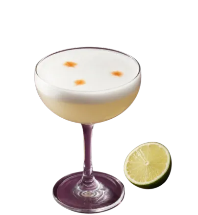
Pisco sour
- agua de jamaica
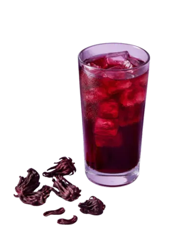
Agua de jamaica
- mate
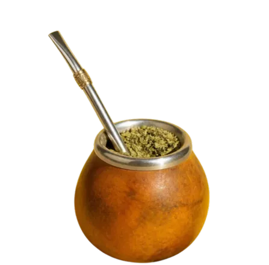
Mate
- caipirinha
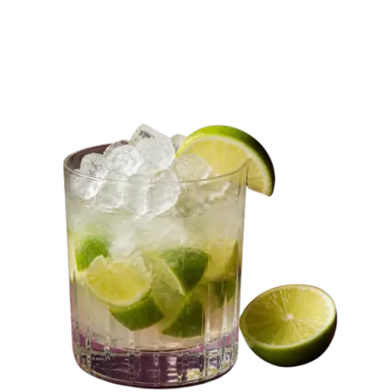
Caipirinha
- champurrado
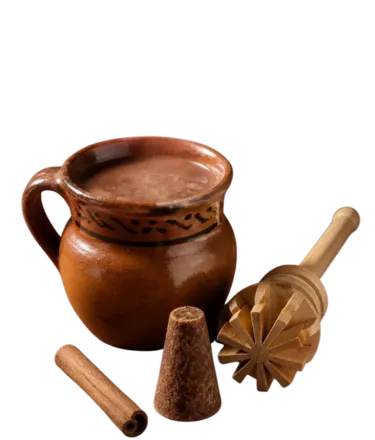
Champurrado
- tepache
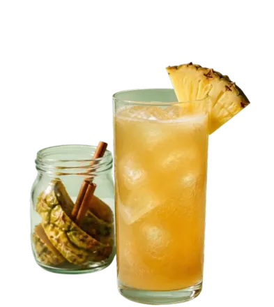
Tepache
- agua de tamarindo
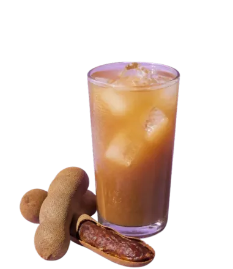
Agua de tamarindo
- café de olla
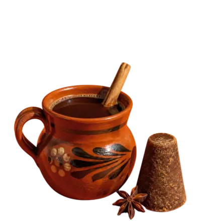
Café de olla
- chicha morada
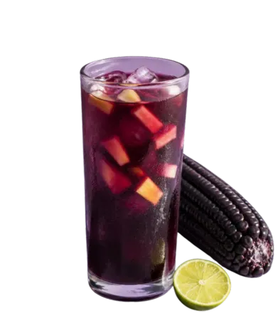
Chicha morada
- limonada de coco
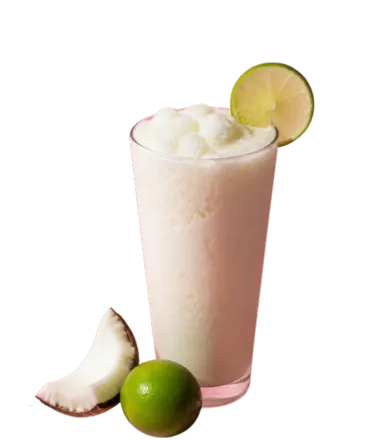
Limonada de coco
- ponche navideño
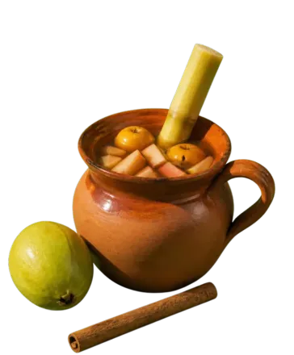
Ponche navideño
- tereré
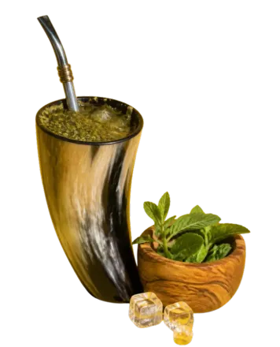
Tereré
Horchata
horchata de arrozRice soaked overnight with cinnamon, blended, strained and sweetened. Creamy and cold, no dairy needed.
What’s in it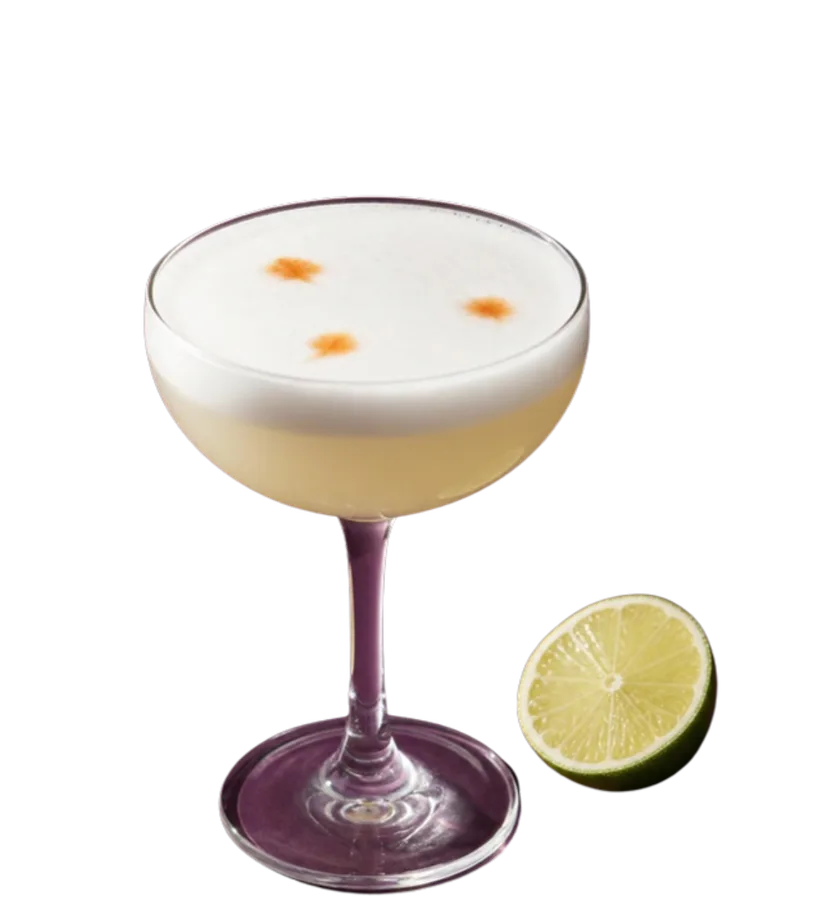
Pisco sour
pisco sourPisco, citrus and sugar, usually shaken with egg white and finished with drops of bitters. Peru and Chile both have living traditions of it, and both claim it.
What’s in it- Pasteurized egg white · from your fridge

Agua de jamaica
agua de jamaicaDried hibiscus simmered, sweetened and chilled. Tart, ruby red and one of Mexico’s most popular aguas frescas.
What’s in it- Water · from the tap
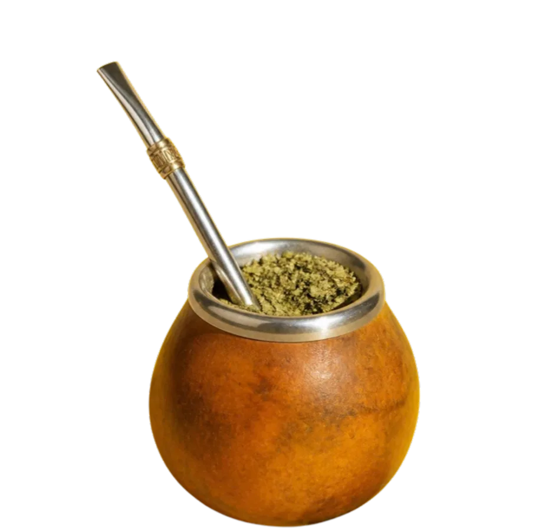
Mate
mateYerba mate in a gourd, topped up with hot (never boiling) water and sipped through a metal straw. Made to be passed around.
What’s in it- Hot water · from the kettle (not boiling)

Caipirinha
caipirinhaCachaça, lime and sugar, muddled in the glass and filled with crushed ice. Brazilian law calls it the country’s typical drink.
What’s in it- Sugar · from your pantry
- Crushed ice · from your freezer
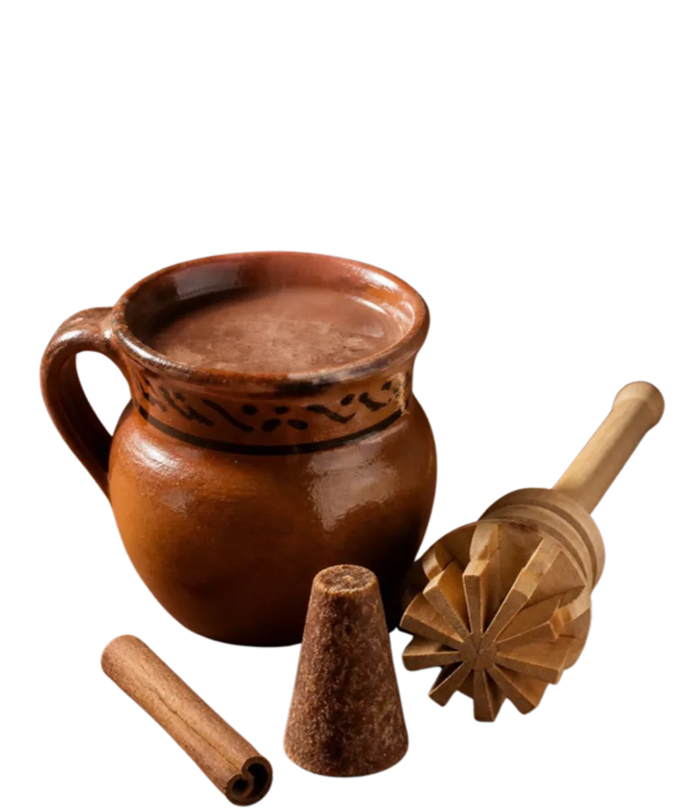
Champurrado
champurradoA thick, warm chocolate atole made with masa, piloncillo and often cinnamon. Poured alongside tamales, especially on cold mornings.
What’s in it- Milk or water · from your fridge
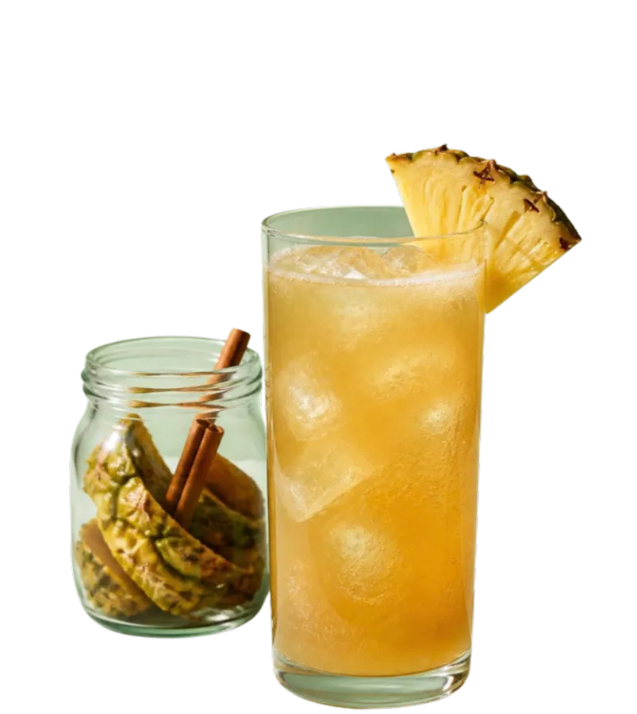
Tepache
tepachePineapple peel fermented for a few days in water with piloncillo, sometimes with cinnamon and cloves. Sweet, a little sour, low in alcohol and sold from barrels by the cup or the bag.
What’s in it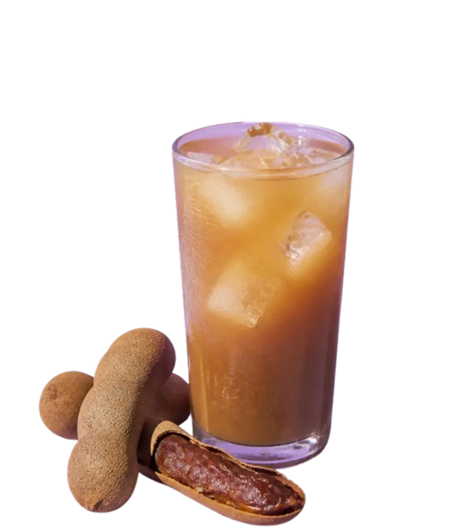
Agua de tamarindo
agua de tamarindoTamarind pods simmered, soaked and strained into a sweet-sour drink the color of milky caramel. One of Mexico’s most popular aguas frescas, with horchata, jamaica and limón.
What’s in it- Ice · from your freezer
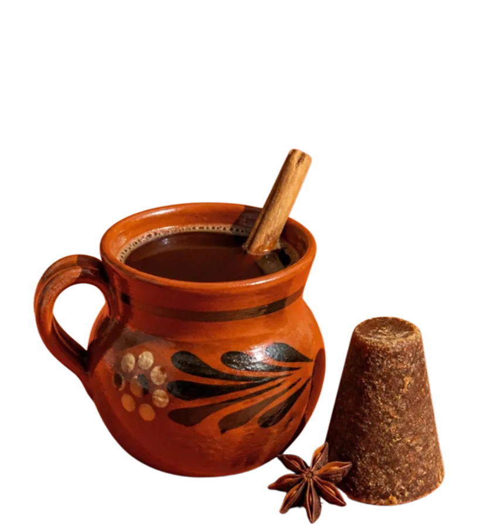
Café de olla
café de ollaCoffee simmered in a clay pot with piloncillo and cinnamon, then strained into a mug. Sweet, lightly spiced and made with water alone.
What’s in it- Orange peel · from your fruit bowl
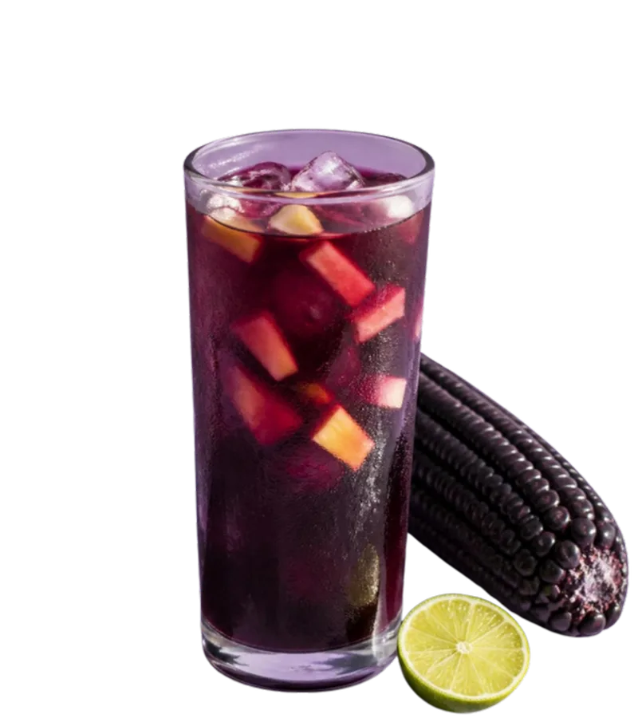
Chicha morada
chicha moradaPurple corn simmered with pineapple, quince, cinnamon and cloves, then strained, sweetened and served over ice with a squeeze of lemon. Deep purple, sweet and a little tart.
What’s in it- Lemons · from the market
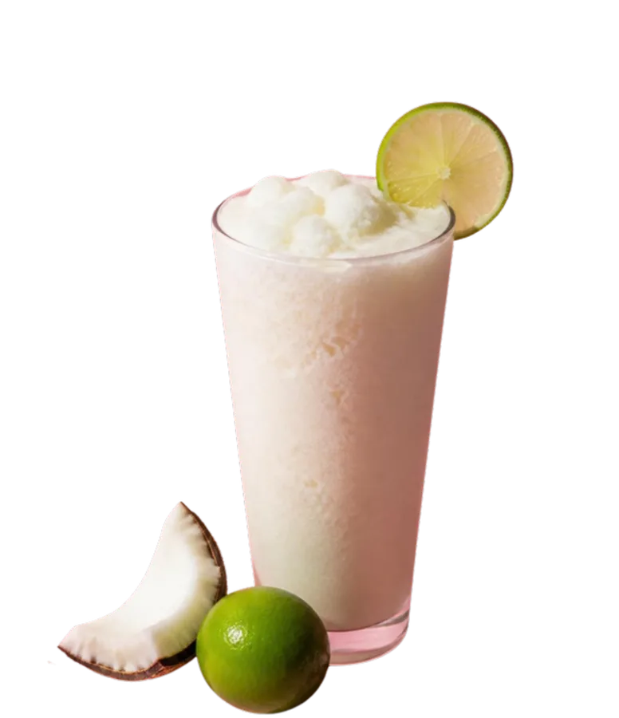
Limonada de coco
limonada de cocoCoconut milk blended with lime juice, sugar and ice into a pale, frothy limeade. A coconut shake with, in most recipes, no dairy at all.
What’s in it- Sugar · from your pantry
- Ice · from your freezer
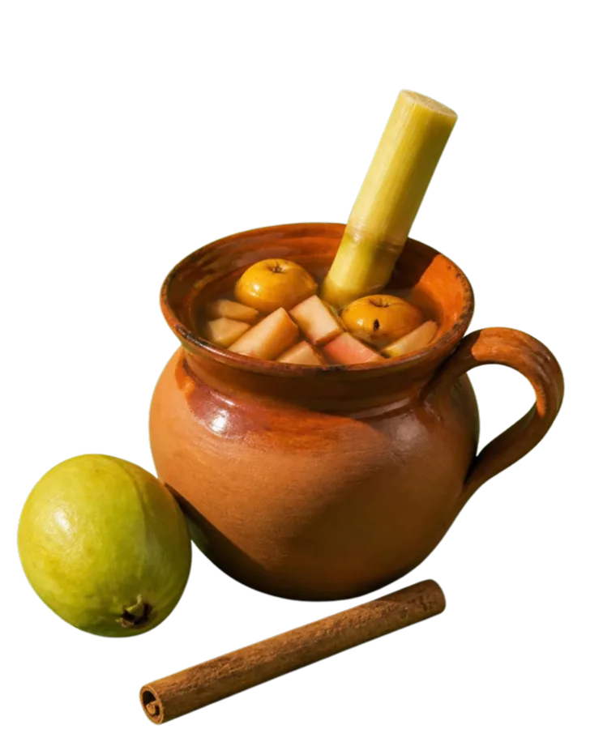
Ponche navideño
ponche navideñoTejocotes, guavas, apples, sugarcane and prunes simmered with piloncillo and cinnamon, then ladled hot into mugs. The drink of the posadas.
What’s in it- Tejocotes and apples · from the market
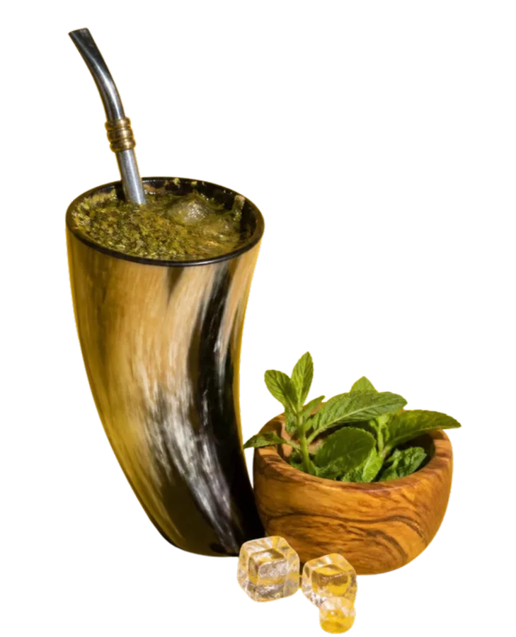
Tereré
tereréYerba mate sipped through a metal straw with ice-cold water and, usually, a few crushed herbs. Paraguay’s way of staying cool, and its first entry on UNESCO’s intangible heritage list.
What’s in it- Refreshing herbs, such as mint · from the market
- Ice and cold water · from your freezer